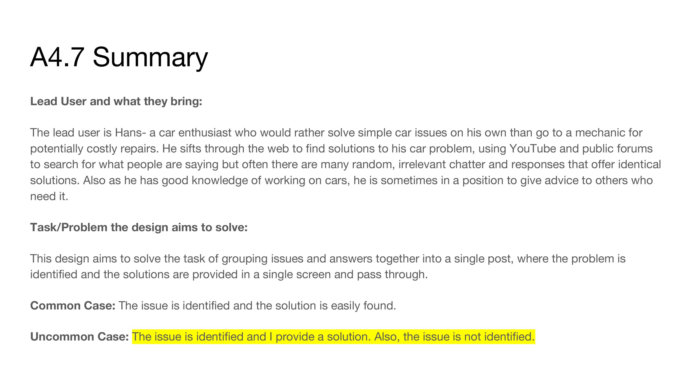
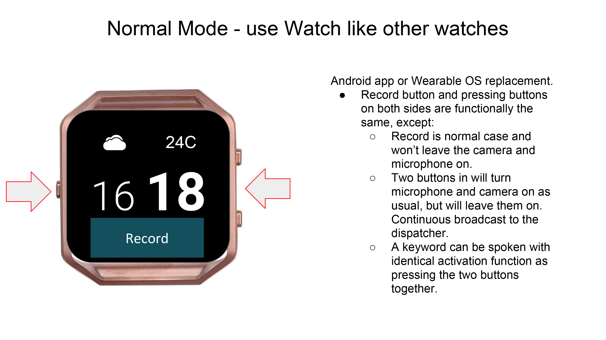
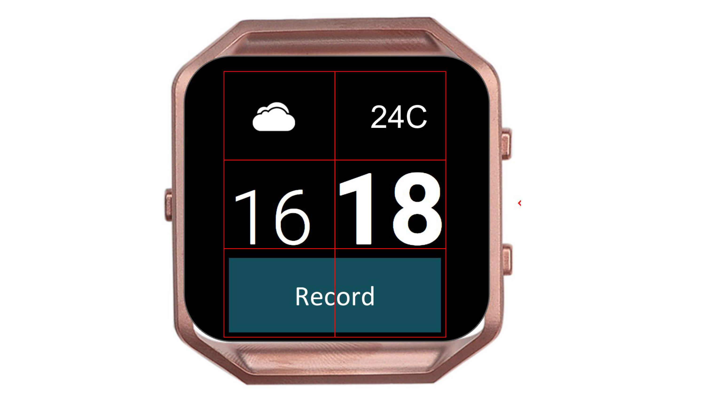
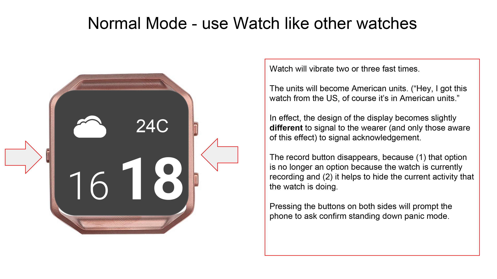
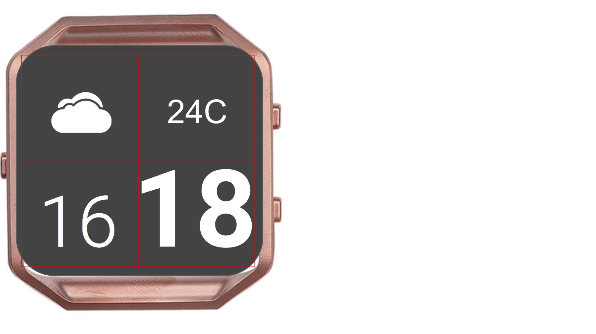
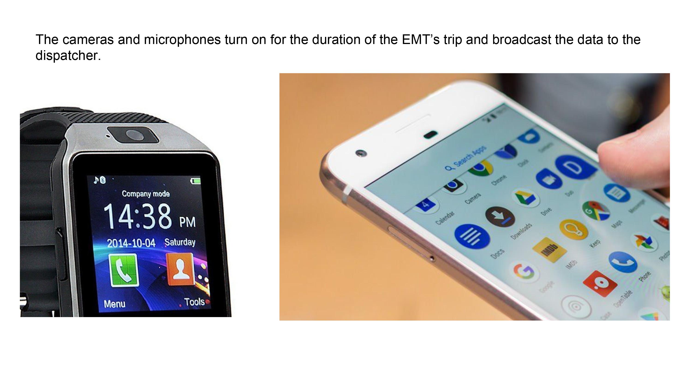
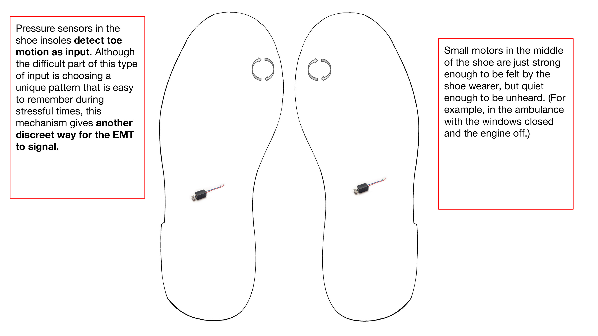
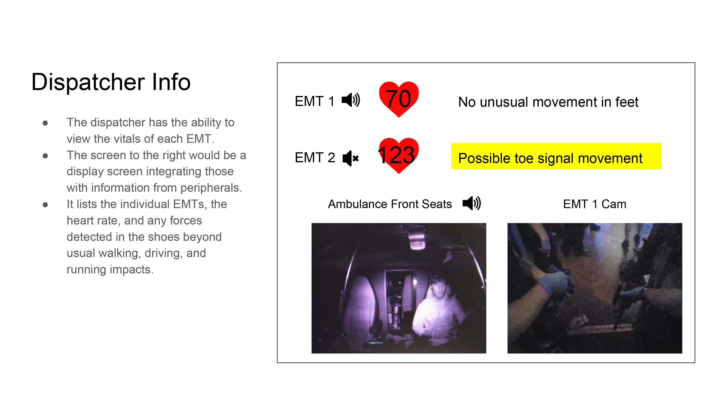
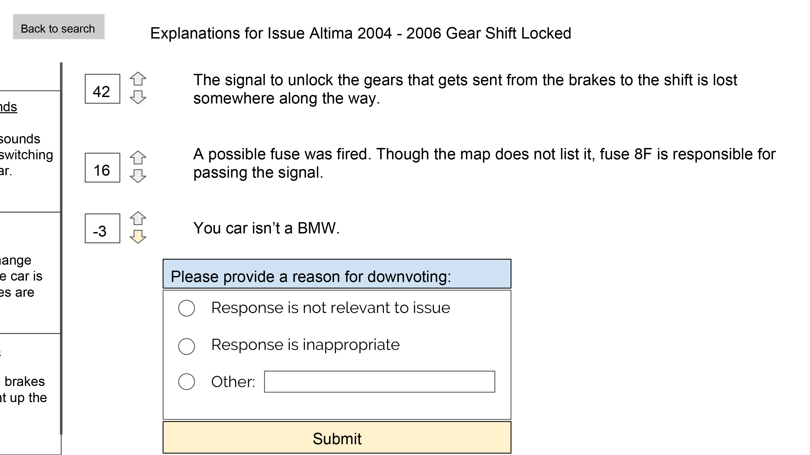

The lead user are EMTs in Tijuana who need a way to discreetly communicate with their dispatchers on possible situations. In the communication they may also want to tell whether they are stuck at their current location or are traveling e.g. to a hospital.
They currently solve their problem through an text messaging and radio, and they have an app where they can fire it up and press a button. Their app helps to solve the time problem but not the discreet problem.








